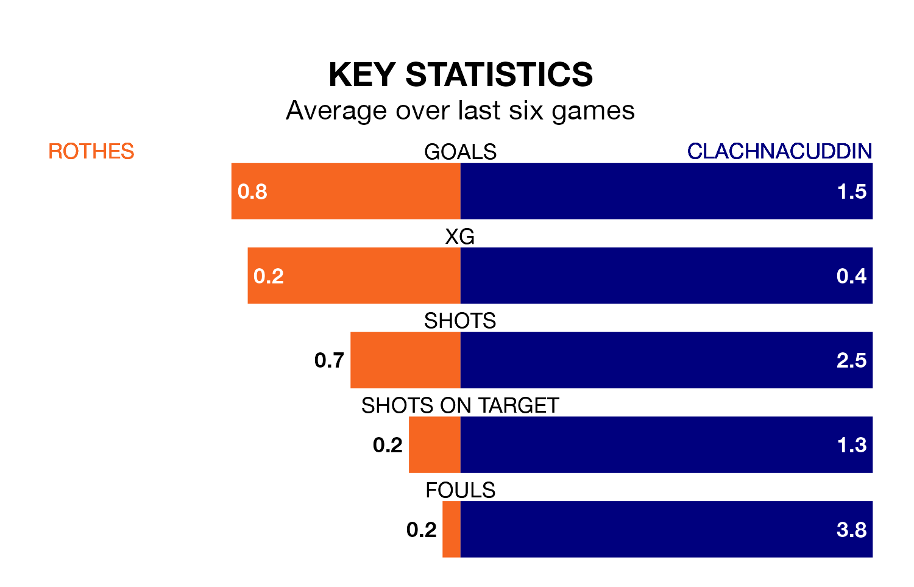

Rothes are on a terrible run ahead of hosting Clachnacuddin at MacKessack Park on Saturday, with just two points collected from their last six games.
Rothes have picked up two draws and four losses in their last six Highland Football League games, and face a Clachnacuddin side whose last six games have brought one win and two draws.
Clachnacuddin are 17th in the table after 26 games, of which they have won three and drawn seven, earning 16 points.
Rothes are six places ahead of the visitors in 11th, with eight wins and seven draws putting them on 31 points.
In the last 10 years, Rothes and Clachnacuddin have played each other on 12 occasions. Rothes won four of them, Clachnacuddin seven, and they drew once.
On average, Rothes scored 1.7 goals and Clachnacuddin 3.4 in those matches.
Their last meeting was on November 4, when Rothes won 1-0 away.
With 34 goals in 29 games so far this season, the home side are scoring at below the league average rate with 1.2 goals per game. And they are conceding at an average rate, letting in 54 goals at a rate of 1.9 per game.
Clachnacuddin are also below average scorers, with 1.4 goals per game, compared to a league average of 1.9. They have conceded 2.9 goals per game.
Rothes's last match was on March 2, a 2-2 draw against Deveronvale.
Clachnacuddin drew 1-1 with Nairn County last time out, also on March 2.
Updated: 09:34 (UTC), 08/03/24